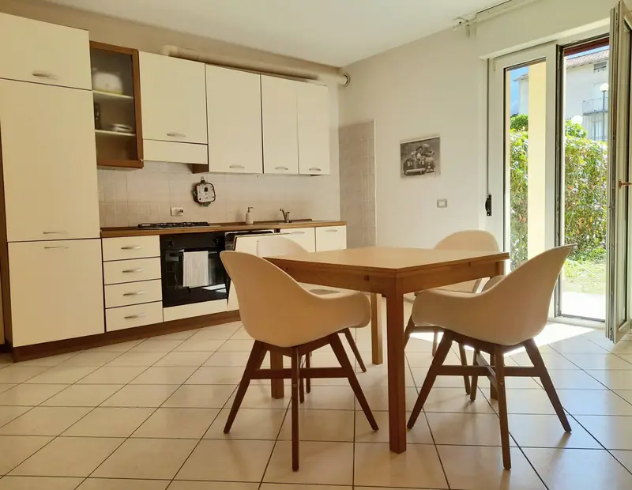
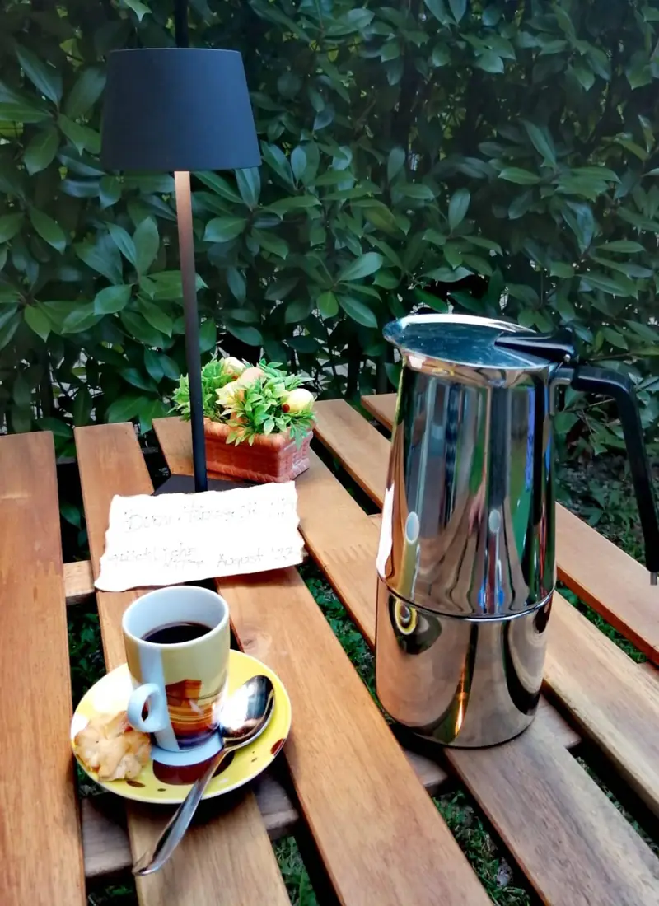

Casa vacanze · Colico, Lago di Como
Il Mirto, la tua casa sul lago
Un appartamento luminoso con giardino privato e garage, nel cuore di Colico: lago, stazione, traghetti e Piazza Garibaldi sono tutti raggiungibili a piedi.
- Fino a 3 ospiti
- 1 camera matrimoniale
- Giardino privato
- Garage gratuito
- Cani benvenuti


Benvenuti al Mirto
Una casa vacanze in centro a Colico, tutto a portata di passo
Al piano terra di una tranquilla zona residenziale, Il Mirto è il punto di partenza ideale per scoprire l'Alto Lago di Como senza dipendere dall'auto.
Si entra in un'ampia cucina-soggiorno con tavolo da pranzo per quattro; un disimpegno porta alla camera matrimoniale e al bagno. Ogni stanza si apre sul giardino privato, completamente recintato: perfetto per una colazione all'aperto, un pomeriggio sui lettini o per lasciare correre il vostro cane in sicurezza.
Self check-in
Arrivi in autonomia con la cassetta di sicurezza per le chiavi.
Vista su monti e giardino
Il verde del giardino e le cime che circondano il lago.
Caffè al risveglio
Macchina per caffè espresso per iniziare bene la giornata.
Pulizia impeccabile
Il punto più apprezzato dagli ospiti nelle recensioni.
La casa
Comfort di casa, a due passi dal lago
Un intero appartamento riservato a voi: due climatizzatori indipendenti, Wi-Fi, cucina completa e un giardino ad uso esclusivo.
Gli spazi
Cucina-soggiorno
Ambiente ampio e luminoso con cucina completamente attrezzata, tavolo allungabile per quattro persone e divano. Su richiesta, un letto singolo per il terzo ospite adulto (o il divano trasformato in letto, da concordare).
Camera matrimoniale
Letto matrimoniale, armadio capiente, ventilatore a soffitto, tende oscuranti e porta-finestra sul giardino con vista sulle montagne.
Bagno
Bagno completo con vasca, bidet, asciugacapelli e lavatrice.
Giardino e garage
Piccolo giardino privato e recintato con terrazzo coperto, zona pranzo all'aperto e due lettini. Garage privato gratuito su richiesta, con accesso diretto al corridoio.
Servizi e dotazioni
Cucina e pranzo
- Cucina completa con forno e piano cottura
- Frigorifero e congelatore
- Lavastoviglie
- Macchina per caffè espresso
- Bollitore e tostapane
- Piatti, posate, calici da vino
- Tavolo da pranzo allungabile
Clima e connessione
- Aria condizionata (2 split indipendenti)
- Riscaldamento
- Ventilatore a soffitto
- Wi-Fi
Camera e bagno
- Biancheria da letto e asciugamani
- Cuscini e coperte aggiuntivi
- Tende oscuranti e armadio
- Vasca da bagno e bidet
- Asciugacapelli, sapone, acqua calda
- Lavatrice
All'aperto
- Giardino privato recintato
- Terrazzo coperto
- Zona pranzo all'aperto
- Lettini prendisole
- Vista su giardino e montagne
Servizi
- Garage privato gratuito
- Animali domestici ammessi
- Self check-in con cassetta chiavi
- Allarme antincendio
Tassa di soggiorno di 1 € riscossa al check-out. Come previsto dalla legge, all'arrivo registriamo i documenti d'identità degli ospiti. Sono presenti telecamere esterne sulla proprietà; non sono presenti TV e asciugatrice.
Galleria
Uno sguardo dentro casa
Recensioni
Cosa dicono gli ospiti
Media di 27 recensioni verificate su Airbnb.
Leggi le recensioni su AirbnbPosizione
Nel centro di Colico, porta dell'Alto Lago
Colico si trova nella punta nord del Lago di Como, dove il lago incontra la Valtellina e la Valchiavenna. Da qui partono i battelli per Varenna, Bellagio e Menaggio e i treni per Milano, Sondrio e Chiavenna.
Vicino a casa
- Stazione ferroviaria di Colico4 min a piedi
Treni diretti per Milano, Lecco, Sondrio, Tirano e Chiavenna.
- Piazza Garibaldi8 min a piedi
Il cuore del paese, con bar, gelaterie e ristoranti.
- Lungolago e imbarcadero10 min a piedi
Passeggiata sul lago e battelli per scoprire il Lario dall'acqua.
- Lido di Colico e spiagge15 min a piedi
Spiagge, noleggio SUP e uno dei migliori spot di kitesurf e windsurf d'Italia.
- Forte Montecchio Nord1,5 km
Il forte della Grande Guerra meglio conservato d'Europa, con i cannoni originali.
- Forte di Fuentes4 km
Rovine della fortezza spagnola del Seicento con vista sul Pian di Spagna.
- Abbazia di Piona6 km
Abbazia cistercense affacciata sul lago, con chiostro romanico del XIII secolo.
- Varenna25 min in treno
Il borgo più fotografato del lago, raggiungibile anche in battello.
- Bellagioin battello
La "perla del Lario", tra ville e giardini storici.
Tempi e distanze indicativi. Milano è a circa 1 ora e 20 di treno; St. Moritz e l'Engadina a circa 1 ora e 45 di auto.
Scopri cosa fare a ColicoDisponibilità
Scegli le date del tuo soggiorno
Il calendario è sincronizzato automaticamente con Airbnb e Booking.com. Seleziona arrivo e partenza, poi prenota sulla piattaforma che preferisci o inviaci una richiesta diretta.
Calendario
Caricamento disponibilità…
Prenota direttamente
Scrivici, ti rispondiamo noi
Invia una richiesta senza impegno: verifichiamo le date e ti rispondiamo con il prezzo e le istruzioni per confermare.
- Nessuna commissione di servizio delle piattaforme di prenotazione.
- Contatto diretto con l'host per orari, esigenze particolari, letto aggiuntivo o garage.
- Date sincronizzate con Airbnb e Booking.com, per evitare sovrapposizioni.
La richiesta non è una prenotazione: il soggiorno è confermato solo dopo la nostra risposta.
Domande frequenti
Prima di partire
Gli animali sono ammessi?
Sì, i cani sono i benvenuti. Il giardino privato è completamente recintato e riservato agli ospiti e ai loro amici a quattro zampe.
C'è un parcheggio?
Su richiesta è disponibile un garage privato gratuito, con accesso diretto al corridoio dell'edificio. Segnalacelo al momento della prenotazione.
Come funziona il check-in?
Il check-in è dalle 15:00 alle 19:00 ed è autonomo, tramite cassetta di sicurezza per le chiavi. Il check-out è entro le 10:00.
Si può arrivare in treno?
Sì, la stazione di Colico, sulla linea Milano–Lecco–Sondrio/Tirano e Colico–Chiavenna, si raggiunge a piedi in pochi minuti. Non serve l'auto per muoversi in paese.
Quanto dista il lago?
Il lungolago e l'imbarcadero dei battelli sono a circa 10 minuti a piedi; Piazza Garibaldi con bar e ristoranti a circa 8 minuti.
Possono dormire tre persone?
Sì: oltre al letto matrimoniale, su richiesta prepariamo un letto singolo in soggiorno per un adulto, oppure il divano può essere trasformato in letto (da concordare).
Contatti
Siamo qui per aiutarti
Per domande sulla casa, sulla zona o per una richiesta di prenotazione, contattaci come preferisci.